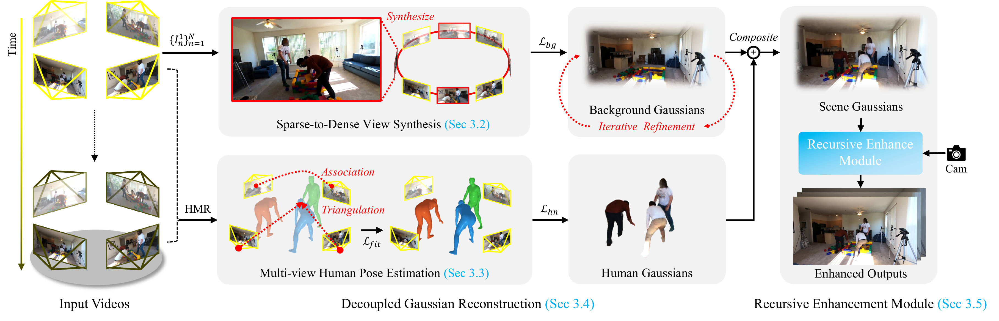

Drag the slider to compare. From sparse, low-overlap cameras, StudioRecon enables bullet-time rendering with full 360° orbit around dynamic human scenes.
Existing volumetric capture of dynamic human performance achieves high fidelity with dense camera arrays. However, in real-world scenarios, only a handful of low-overlap cameras are available, which degrades the output quality and leaves large areas unobserved. Recent 4D reconstruction methods have focused on low-overlap settings, yet they still produce noticeable artifacts in under-observed regions. Video diffusion models have emerged as another option, but they show geometrically inconsistent results for humans. To address these limitations, we propose StudioRecon, a pipeline that reconstructs 4D human scenes from sparse, low-overlap cameras by decoupling background and humans. We densify background supervision by synthesizing hundreds of camera-controlled novel views with a video diffusion model. We also robustly initialize deformable Gaussian humans with cross-view identity association and triangulated multi-view keypoint fitting. Finally, our recursive enhancement module with motion-adaptive consistency injection harmonizes the composed output, thereby further avoiding remaining artifacts. We achieve state-of-the-art novel-view synthesis across four real-world datasets and demonstrate applications such as novel trajectory rendering and human replacement.

Our pipeline consists of four stages: (1) Sparse-to-Dense View Synthesis using a camera-controlled video diffusion model to synthesize hundreds of novel views from sparse inputs; (2) Multi-view Human Pose Estimation with cross-view identity association and 3D triangulation; (3) Decoupled Gaussian Reconstruction optimizing backgrounds on synthesized views and humans on original videos; (4) Recursive Enhancement Module with motion-adaptive consistency injection for temporally coherent output.
Explore the reconstructed scene at t=0. Drag to orbit, scroll to zoom, arrow keys to move, WASD to rotate. Shown without Difix enhancement and with spherical harmonics downsampled to degree 2 for web delivery.
Novel view synthesis from 4 sparse cameras on held-out evaluation views. All methods are trained on the same input.
Our Gaussian representation supports rendering from arbitrary camera paths, including dolly zoom and oscillating motion.
Dolly Zoom
Oscillating Trajectory
Since humans and backgrounds are reconstructed independently, we can replace actors with new identities from a single reference image.
Original
Replaced
We ablate our two key contributions: dense view synthesis via video diffusion and recursive diffusion enhancement.
@inproceedings{hwang2026studiorecon,
title = {4D Human-Scene Reconstruction from Low-Overlap Captures},
author = {Hwang, Minhyuk and Kim, Sangmin and Do, Seunguk and Kim, Daneul and Park, Jaesik},
booktitle = {ACM SIGGRAPH 2026 Conference Proceedings},
year = {2026}
}